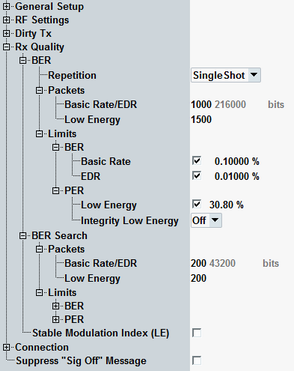

The "Measurement Control" parameters configure the scope of the measurement.
See also: "Statistical Settings"

Remote commands ...:RXQuality:... are used for "BER" / "PER" measurements and ...:SEARch:... commands for "BER Search" / "PER Search" measurements.
Remote commands ...:LE1M are used for LE 1M PHY, ...:LE2M for LE 2M PHY, and ...:LRANge for LE coded PHY.
- General setup: see "General Settings"
- RF settings:
– For signal routing, see "Signal Routing" – For RF frequency settings, see "RF Frequency" – For RF power settings, see "RF Power Settings" - Dirty TX: see "Dirty Transmitter Configuration"
- Connection: see "Connection Configuration"
Defines how often the measurement is repeated if it is not stopped explicitly or by a failed limit check.
- Continuous: The measurement is continued until it is explicitly terminated. The results are periodically updated.
- Single-Shot: The measurement is stopped after one statistics cycle.
Single-shot is preferable if only a single measurement result is required under fixed conditions, which is typical for remote-controlled measurements. Continuous mode is suitable for monitoring the evolution of the measurement results in time and observe how they depend on the measurement configuration, which is typically done in manual control. The reset/preset values therefore differ from each other.
Defines the number of data packets to be measured per measurement cycle (statistics cycle). The number of packets sent can be larger than the specified value because of possible packet lost on the way to the EUT and back.
The number of payload bits is displayed for information.
See also: "Statistical Results"
BER measurement:
PER measurement:
BER search measurement:
PER search measurement:
Specifies the initial "TX Level (CMW)" for a search iteration.
The settings are only displayed among the "RF Setup" pane of an RX search measurement. They are not displayed in the configuration tree.
Remote command:Specifies the search level step size. The search iteration is performed at decreasing power steps.
The settings are only displayed among the "RF Setup" pane of an RX search measurement. They are not displayed in the configuration tree.
Remote command:Defines and activates/deactivates the upper limit for the results of BER and PER measurements.
The limits of BER and PER search measurement define the value for which the RX sensitivity level is determined.
Remote command:BER limits:
PER limits:
BER search limits:
PER search limits:
Sets the ratio of the packets with correct CRC, generated and transmitted by the R&S CMW.
This setting is appropriate for PER report integrity tests.
- TP/RCV-LE/CA/BV-07-C (for LE 1M PHY)
- TP/RCV-LE/CA/BV-13-C (for LE 2M PHY)
- TP/RCV-LE/CA/BV-30-C (for LE coded PHY, S = 2)
- TP/RCV-LE/CA/BV-31-C (for LE coded PHY, S = 8)
- TP/RCV-LE/CA/BV-19-C (for LE 1M PHY, stable modulation)
- TP/RCV-LE/CA/BV-25-C (for LE 2M PHY, stable modulation)
- TP/RCV-LE/CA/BV-36-C (for LE coded PHY, S = 2, stable modulation)
- TP/RCV-LE/CA/BV-37-C (for LE coded PHY, S = 8, stable modulation)
PER measurement:
PER search measurement:
If enabled, stable modulation index is used.
If disabled, standard modulation index is used.
For "Dirty Tx Mode" = "Spec Table", see also Table "Dirty transmitter for LE according to the test specification".
For "Dirty Tx Mode" = "Single Values", see also "Single Values".
Remote command:The connection settings are the same as in the configuration tree, see "Connection Configuration".
If you press [ON | OFF] while the "Bluetooth Signaling" softkey is selected and the master signal is on, a warning can be displayed. It asks you whether you really want to switch off the master signal.
The checkbox enables/disables the warning.
Remote command:N.a.